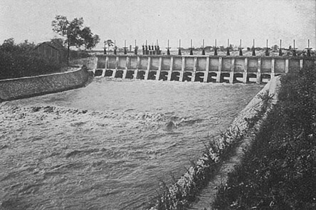
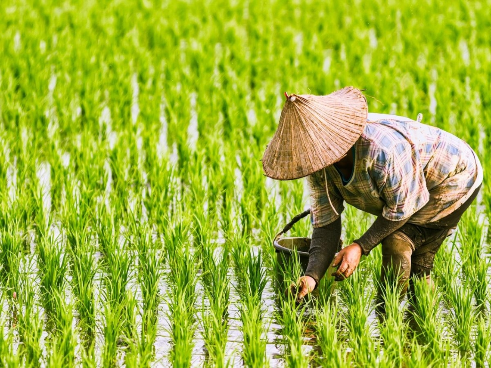

日治時期
日治時期台灣農業獲得極大的發展與改進。日本建造了混凝土水壩、水庫和引水道，形成了一個網絡化的灌溉系統，例如嘉南大圳。水稻和甘蔗的種植面積分別增長了74%及30%以上。當時還成立了農民協會。此時農業主導了台灣經濟。1904年台灣有23%的土地面積用於農業。1895年日本在台灣創立了台灣農業研究所。 除了水利設施的興建，日本殖民政府對臺灣「蟲害」防治觀念的引入，也深刻影響當時的農業發展。《臺灣日日新報》在日治初期即有紀錄基隆、臺北、桃園、苗栗、臺中、南投、嘉義、臺南等地的蟲害。另外，曾任臺灣總督府農試驗場的新渡戶稻雄亦分類和分析害蟲，提出稻米生產中會有三成折損於蟲害，呼籲須致力害蟲的預防和驅除。 甲午戰爭後，日本快速工業化和都市化伴隨著大量的糧食消耗，成為殖民地的臺灣和朝鮮，便成為供應日本國內糧食的重要來源。於是解決威脅糧產的蟲害，成為日本政府關注的重點之一。於1921年，日本當局在基隆、臺北、新竹、員林、高雄等地建立植物檢查所，防堵進出臺灣的植物可能帶有的蟲害。除此之外，政府亦透過昆蟲學家調查和分析，頒布「臺灣害蟲驅除豫防施行規則」，讓地方政府能動用行政力量徵集驅蟲的人力，以及將驅蟲成本與業主佃農分攤。 19世紀快速發展的化學工業，為消滅啃食農作物的昆蟲帶來新的滅絕方法－化學農業。不過農藥的使用，仍未成為臺灣總督府水稻部門對付害蟲防治的主要手段，當時農村依舊採取以人力摘除植株的傳統方法，化學農藥的普及一直得等到戰後的美援時代。然而，日治時期對害蟲觀念的建立和推廣，仍為日後農藥使用和蟲害防治奠定一定的基礎。
中華民國時期
台灣在1945年被移交給中華民國後，政府首先振興農業以恢復二戰對台灣經濟造成的破壞，到了1953年完成恢復。在中國農村復興聯合委員會的帶領下，政府擴大了農業基礎設施的建設，並提出了台灣土地改革方案：國府於1949年實行三七五減租，於1951年實行公地放領，於1953年實行耕者有其田。1956年，農業用地占台灣土地總面積的34% 。 台灣在1940年代後期開始了高速的經濟增長和工業化。1963年工業產值超過農業產值。同樣在1960年代，政府的經濟政策轉向了以發展紡織、方便食品、消費電子產品等勞動密集型產業爲主的出口導向型經濟，最終使台灣與英屬香港、新加坡和韓國一起成為亞洲四小龍。隨著越來越多人離開農村及勞動力成本上升，這對農業生產造成了影響。 1970年代農業從主要產業轉變為輔助產業。當時政府出台了政策鼓勵農民種植有機作物。1980年代因農村人口遷入城市，造成大量農地閒置，政府開始開放糧食進口。2002年1月1日，台灣以台澎金馬獨立關稅區的名義加入世界貿易組織，進一步傷害了台灣農業。作為對策，政府開發了觀光農業。 台灣農業雖然在經濟中的重要性已大不如前，但現今台灣已成為全球垂直農業的領導者。因台灣在垂直農業技術和專業知識方面的高速發展，台灣企業常希望與國際企業合作。因台灣高度集中了LED、機器人、工程、數據處理等相關技術，從而使得垂直農業受益匪淺。台灣的垂直農業專注於生產優質蔬菜，因價格比傳統農產品高昂，所以主要與進口產品競爭。 最近政府出台了新政策期望活化所有的閒置農地，從而確保糧食安全、糧食自足，同時一併振興農業。還引入了使該行業更具競爭力、更現代化和綠色化的政策，開始吸引大量城市青年務農。2009年農業委員會開始為新農民的教育和培訓提供補貼，其中大部分人已擁有高等學位。 2020年台灣農委員會撥出50億元新台幣貸款用於援助受新冠肺炎疫情影響的種植業、牲畜業、水產養殖業及其他類別的農業。貸款的優惠利率為0.79至1.68%。
